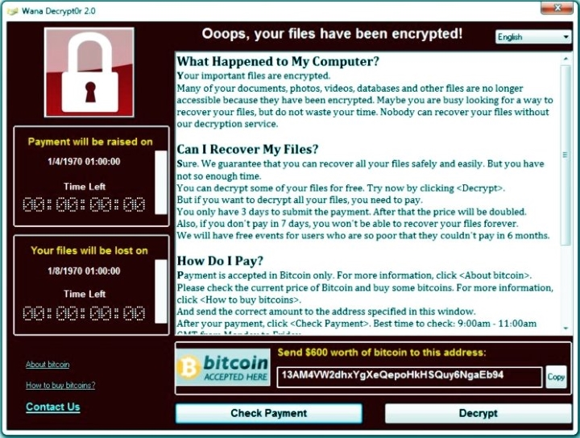

How to decrypt files or secure yourself from Ransomware?
#WannaCry #Xorist #Xtbl #Petya #NotPetya #Spora #Decrypt #EternalBlue #Ransomware #Trojan-encryptor #Anti-RansomwareThe world does not stand still, and more and more types of encryptors appear. It has been proven that 98% of them can not be decrypted without a corresponding key, and to receive it you have to give a large amount of money to an attacker. How to protect yourself from this and save not only important files, documents and photos on your home computer, but at work and even file servers for free?
Try Kuranin Anti-Ransomware
- Heuristic analysis, due to which the newest types of Ransomware will be detected and stopped
- Basic real-time protection that protects you from all types of threats, including exploits, worms and other computer viruses
- Network connection protection, preventing hacker attacks on the computer and closing dangerous Windows ports
- Protection of removable drives, thanks to which you can safely use your USB flash drive, without worrying about anything
Kuranin Anti-Ransomware is a new method of fighting against Trojans-encryptors. You get maximum protection in four main areas:
By following the above rules, you reduce the risk of infection by 99,99%!